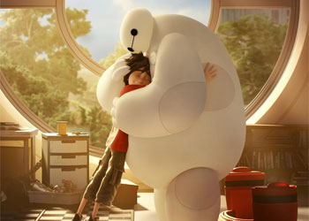
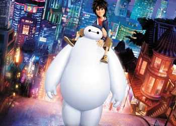

1.初级大白：医疗伴侣大白的在片中的使命是关心他人，是你身边的健康顾问。只要一次简单快速的扫描，大白就能检测出生命指数，并且根据疼痛程度治疗疾病。在大白的电池量极低的情况下，他的表现就像一个醉汉，萌点频出。 2.升级大白：超级英雄为了查清火灾和哥哥死因的真相，男主角小宏为大白设计了另一种作战模式，成为了“超能陆战队”的一员大将，变 成超级英雄，活脱脱是个胖版的钢铁侠，带你卖萌带你飞。更重要的是，大白还是一个和平使者。 3.终极审核：年度暖男一个被许多观众提及的暖心画面是，大白检测到男主角小宏的体温过低，用“熊抱”他的方式为他供暖，其余小伙伴都靠在大白软绵绵的身上取暖。可以说，为了关心他人的健康而生的机器人大白，绝对是一个真正的“大暖; |
 |
|  |